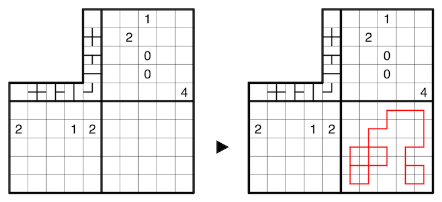

A clue outside the grid indicates how many times the corresponding line shape (i.e. a cross, branch, straight line, turn, or empty cell) appears in the corresponding row or column, irrespective of the line shape's rotation.
A 5x5 example is provided:
